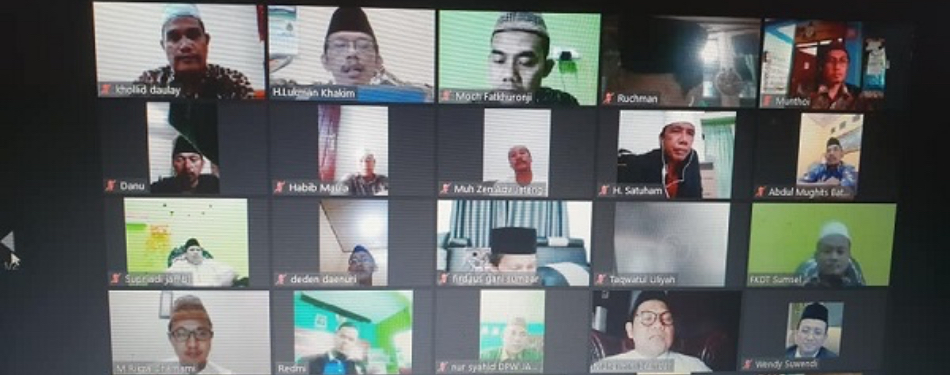

Ketum PKB Ajak DPP FKDT Berdayakan Madrasah Diniyah Takmiliyah
Ketua Umum Dewan Pengurus Pusat Partai Kebangkitan Bangsa (DPP PKB) Muhaimin Iskandar mengajak jajaran. Quo no dolorum albucius lucilius, hinc eligendi ut sed. Ex nam quot ferri suscipit, mea ne legere alterum repudiandae. Ei pri quaerendum intellegebat, ut vel consequuntur voluptatibus. Et volumus sententiae adversarium duo......
Read more

Silaturahim ke DPP FKDT Ketum DPP PKB Bantu Ustadz Madin
Ketum DPP PKB Dr Muhaimin Iskandar MSi (Cak Imin) bersilaturahmi dengan jajaran Pengurus Forum Komunikasi Diniyah. Nulla dui. Fusce feugiat malesuada odio. Morbi nunc odio, gravida at, cursus nec, luctus a, lorem.....
Read more
Muhaimin Iskandar Minta Madrasah Diniyah Takmiliyah Diberdayakan
Ketua Umum Dewan Pengurus Pusat Partai Kebangkitan Bangsa (DPP PKB) Muhaimin Iskandar (Gus Ami) .... Nulla dui. Fusce feugiat malesuada odio. Morbi nunc odio, gravida at, cursus nec, luctus a, lorem.....
Read more